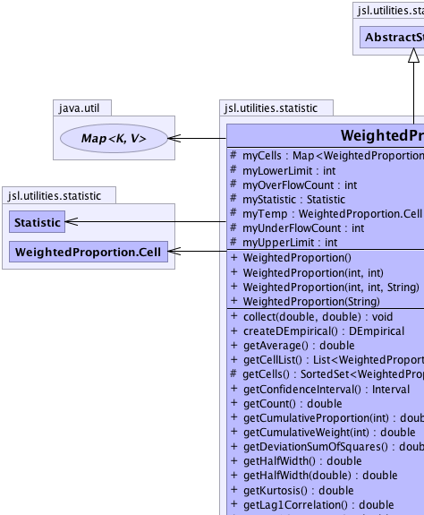
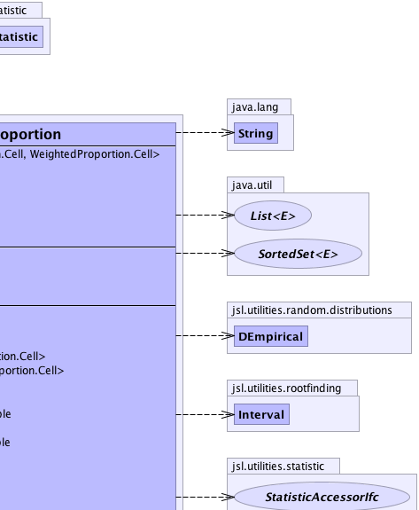
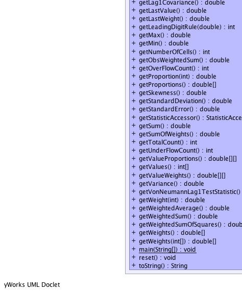
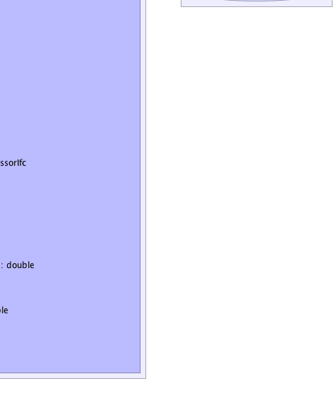

jsl.utilities.statistic.AbstractCollector
jsl.utilities.statistic.AbstractStatistic
jsl.utilities.statistic.WeightedProportion
jsl.utilities.statistic.AbstractCollector
jsl.utilities.statistic.AbstractStatistic
jsl.utilities.statistic.WeightedProportion
|
||||||||||
| PREV CLASS NEXT CLASS | FRAMES NO FRAMES | |||||||||
| SUMMARY: NESTED | FIELD | CONSTR | METHOD | DETAIL: FIELD | CONSTR | METHOD | |||||||||
java.lang.Object
public class WeightedProportion
This class tabulates the weights associated with the integers presented to it via the collect() method Every value presented is interpreted as an integer For every value presented a sum of the weights is maintained. There could be space/time performance issues if the number of different values presented is large. This class can be useful for tabulating the weighted proportions over the values (integers) presented.
|  |  |
|  |  |
| Nested Class Summary | |
|---|---|
class |
WeightedProportion.Cell
Holds the values and their counts |
| Field Summary | |
|---|---|
protected java.util.Map<WeightedProportion.Cell,WeightedProportion.Cell> |
myCells
A Cell represents a value, count pairing |
protected int |
myLowerLimit
The smallest value allowed. |
protected int |
myOverFlowCount
Counts of values located above last bin. |
protected Statistic |
myStatistic
Collects statistical information |
protected WeightedProportion.Cell |
myTemp
Used as a temporary cell during tabulation |
protected int |
myUnderFlowCount
Counts of values located below first bin. |
protected int |
myUpperLimit
The largest value allowed. |
| Fields inherited from class jsl.utilities.statistic.AbstractStatistic |
|---|
DEFAULT_CONFIDENCE_LEVEL, myConfidenceLevel, myNumMissing |
| Fields inherited from class jsl.utilities.statistic.AbstractCollector |
|---|
myData, myDataArraySize, myId, myName, mySaveCount, mySaveDataFlag, myWeights |
| Fields inherited from interface jsl.utilities.statistic.SaveDataIfc |
|---|
DEFAULT_DATA_ARRAY_SIZE |
| Constructor Summary | |
|---|---|
WeightedProportion()
|
|
WeightedProportion(int lowerLimit,
int upperLimit)
|
|
WeightedProportion(int lowerLimit,
int upperLimit,
java.lang.String name)
|
|
WeightedProportion(java.lang.String name)
|
|
| Method Summary | |
|---|---|
void |
collect(double x,
double weight)
Collect weighted statistics on the supplied value using the supplied weight |
DEmpirical |
createDEmpirical()
|
double |
getAverage()
Gets the unweighted average of the observations. |
java.util.List<WeightedProportion.Cell> |
getCellList()
Returns a copy of the cells in a list ordered by the value of each cell, 0th element is cell with smallest value, etc |
protected java.util.SortedSet<WeightedProportion.Cell> |
getCells()
Returns a sorted set containing the cells |
Interval |
getConfidenceInterval()
Returns a two-sided confidence interval on the mean with 95% confidence level based on StudentT distribution |
double |
getCount()
Gets the count of the number of the observations. |
double |
getCumulativeProportion(int i)
Returns the cumulative proportion up to an including i |
double |
getCumulativeWeight(int i)
Returns the cumulative frequency up to an including i |
double |
getDeviationSumOfSquares()
Gets the sum of squares of the deviations from the average This is the numerator in the classic sample variance formula |
double |
getHalfWidth()
Gets the confidence interval half-width. |
double |
getHalfWidth(double alpha)
Gets the confidence interval half-width. |
double |
getKurtosis()
Gets the kurtosis of the data |
double |
getLag1Correlation()
Gets the lag-1 sample correlation of the unweighted observations. |
double |
getLag1Covariance()
Gets the lag-1 sample covariance of the unweighted observations. |
double |
getLastValue()
Gets the last observed data point |
double |
getLastWeight()
Gets the last observed weight |
int |
getLeadingDigitRule(double a)
Computes the right most meaningful digit according to (int)Math.floor(Math.log10(a*getStandardError())) See doi 10.1287.opre.1080.0529 by Song and Schmeiser |
double |
getMax()
Gets the maximum of the observations. |
double |
getMin()
Gets the minimum of the observations. |
int |
getNumberOfCells()
Returns the number of cells tabulated |
double |
getObsWeightedSum()
|
int |
getOverFlowCount()
The number of observations that fell past the last bin's upper limit |
double |
getProportion(int x)
Gets the proportion of the observations that are equal to the supplied integer |
double[] |
getProportions()
Returns an array of size getNumberOfCells() containing the frequencies by value, null if no values |
double |
getSkewness()
Gets the skewness of the data |
double |
getStandardDeviation()
Gets the unweighted sample standard deviation of the observations. |
double |
getStandardError()
Gets the standard error of the observations. |
StatisticAccessorIfc |
getStatisticAccessor()
|
double |
getSum()
Gets the unweighted sum of the observations. |
double |
getSumOfWeights()
Gets the sum of the observed weights. |
int |
getTotalCount()
The total count associated with the values |
int |
getUnderFlowCount()
The number of observations that fell below the first bin's lower limit |
double[][] |
getValueProportions()
|
int[] |
getValues()
Returns an array of size getNumberOfCells() containing the values increasing by value, null if no values |
double[][] |
getValueWeights()
Returns a n by 2 array of value, frequency pairs where n = getNummberOfCells() |
double |
getVariance()
Gets the unweighted sample variance of the observations. |
double |
getVonNeumannLag1TestStatistic()
Gets the Von Neumann Lag 1 test statistic for checking the hypothesis that the data are uncorrelated Note: See Handbook of Simulation, Jerry Banks editor, McGraw-Hill, pg 253. |
double |
getWeight(int x)
Returns the current frequency for the provided integer |
double |
getWeightedAverage()
Gets the weighted average of the observations. |
double |
getWeightedSum()
Gets the weighted sum of observations observed. |
double |
getWeightedSumOfSquares()
Gets the weighted sum of squares of the observations. |
double[] |
getWeights()
Returns an array of size getNumberOfCells() containing the frequencies by value, null if no values |
double[] |
getWeights(int[] x)
Interprets the elements of x[] as values and returns an array representing the frequency for each value |
static void |
main(java.lang.String[] args)
|
void |
reset()
Resets the collection as if no data had been collected. |
java.lang.String |
toString()
Returns a String representation of the Statistic |
| Methods inherited from class jsl.utilities.statistic.AbstractStatistic |
|---|
compareTo, fillStatistics, getConfidenceInterval, getConfidenceLevel, getCSVHeader, getCSVStatistic, getCSVStatisticHeader, getCSVValues, getNumberMissing, getStatistics, getStatistics, setConfidenceLevel |
| Methods inherited from class jsl.utilities.statistic.AbstractCollector |
|---|
clearSavedData, collect, collect, collect, collect, collect, collect, collect, getId, getName, getSaveDataOption, getSavedData, getSavedWeights, saveData, setId, setName, setSaveDataArraySizeIncrement, setSaveDataOption |
| Methods inherited from class java.lang.Object |
|---|
clone, equals, finalize, getClass, hashCode, notify, notifyAll, wait, wait, wait |
| Methods inherited from interface jsl.utilities.statistic.StatisticAccessorIfc |
|---|
getName |
| Field Detail |
|---|
protected java.util.Map<WeightedProportion.Cell,WeightedProportion.Cell> myCells
protected Statistic myStatistic
protected WeightedProportion.Cell myTemp
protected int myLowerLimit
protected int myUpperLimit
protected int myUnderFlowCount
protected int myOverFlowCount
| Constructor Detail |
|---|
public WeightedProportion()
public WeightedProportion(java.lang.String name)
public WeightedProportion(int lowerLimit,
int upperLimit)
public WeightedProportion(int lowerLimit,
int upperLimit,
java.lang.String name)
| Method Detail |
|---|
public void collect(double x,
double weight)
CollectorIfc
collect in interface CollectorIfccollect in class AbstractStatisticx - a double representing the observationweight - a double to be used to weight the observationpublic void reset()
CollectorIfc
reset in interface CollectorIfcreset in class AbstractCollectorpublic final int getUnderFlowCount()
public final int getOverFlowCount()
public final int[] getValues()
public final double[] getWeights()
public final double[] getProportions()
public final double getCumulativeWeight(int i)
i -
public final double getCumulativeProportion(int i)
i -
public final double[][] getValueWeights()
public final double[][] getValueProportions()
public final int getNumberOfCells()
public final int getTotalCount()
public final double getWeight(int x)
x -
public final double getProportion(int x)
x -
public final double[] getWeights(int[] x)
x -
public final java.util.List<WeightedProportion.Cell> getCellList()
public DEmpirical createDEmpirical()
protected final java.util.SortedSet<WeightedProportion.Cell> getCells()
public java.lang.String toString()
StatisticAccessorIfc
toString in interface StatisticAccessorIfctoString in class java.lang.Objectpublic final StatisticAccessorIfc getStatisticAccessor()
public final double getWeightedSumOfSquares()
StatisticAccessorIfc
public final double getWeightedSum()
StatisticAccessorIfc
public final double getWeightedAverage()
StatisticAccessorIfc
public final double getVonNeumannLag1TestStatistic()
StatisticAccessorIfc
public final double getVariance()
StatisticAccessorIfc
public final double getSumOfWeights()
StatisticAccessorIfc
public final double getSum()
StatisticAccessorIfc
public final double getStandardError()
StatisticAccessorIfc
public final double getStandardDeviation()
StatisticAccessorIfc
public final double getSkewness()
StatisticAccessorIfc
public final double getObsWeightedSum()
public final double getMin()
StatisticAccessorIfc
public final double getMax()
StatisticAccessorIfc
public final double getLastWeight()
StatisticAccessorIfc
public final double getLastValue()
StatisticAccessorIfc
public final double getLag1Covariance()
StatisticAccessorIfc
public final double getLag1Correlation()
StatisticAccessorIfc
public final double getKurtosis()
StatisticAccessorIfc
public final double getDeviationSumOfSquares()
StatisticAccessorIfc
public final double getCount()
StatisticAccessorIfc
public final double getAverage()
StatisticAccessorIfc
public final double getHalfWidth()
StatisticAccessorIfc
getHalfWidth in interface StatisticAccessorIfcgetHalfWidth in class AbstractStatisticpublic double getHalfWidth(double alpha)
StatisticAccessorIfc
public final int getLeadingDigitRule(double a)
StatisticAccessorIfc
public final Interval getConfidenceInterval()
AbstractStatistic
getConfidenceInterval in interface StatisticAccessorIfcgetConfidenceInterval in class AbstractStatisticpublic static void main(java.lang.String[] args)
args - the command line arguments
|
||||||||||
| PREV CLASS NEXT CLASS | FRAMES NO FRAMES | |||||||||
| SUMMARY: NESTED | FIELD | CONSTR | METHOD | DETAIL: FIELD | CONSTR | METHOD | |||||||||